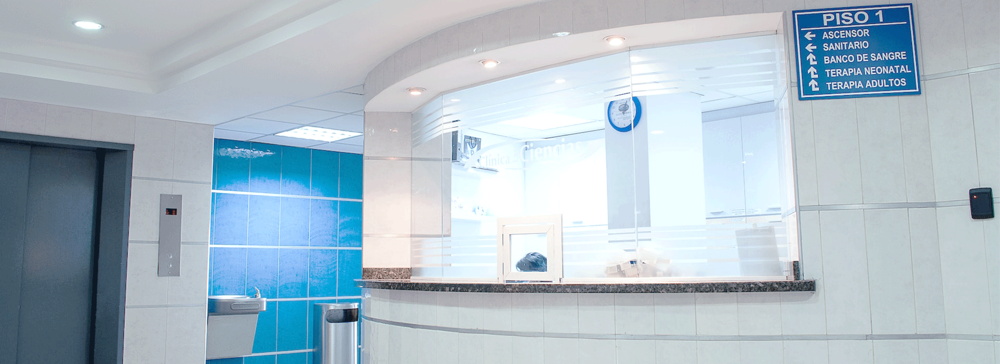
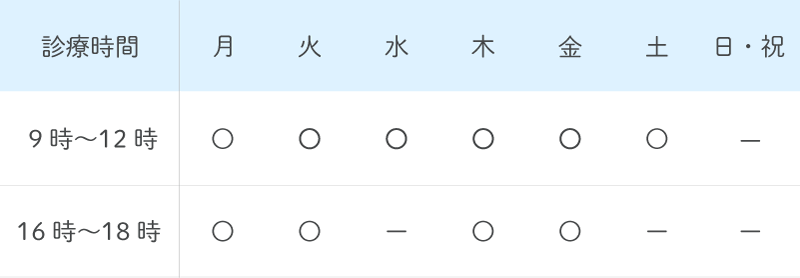

NEWS
お知らせ
お知らせ
| 2023.02.20 | 3月の診療予定日について |
| 2023.01.20 | 2月の診療予定日について |
| 2023.01.10 | インフルエンザ予防接種について |
| 2022.12.23 | 年末年始の診療予定日について |
About
うきま内科クリニックに
ついて
ついて
■ 地域の皆様に寄り添い20年
うきま内科クリニックは開院当初より、地域のかかりつけ医として、皆様の健康の窓口となり、温かな医療を通じて健やかで美しい生活のサポートを心がけてまいりました。
予防接種から訪問医療まで幅広く行っていますので、小さなお子様からご年配の方にまで愛される地域密着型の内科医院を目指しております。
予防接種から訪問医療まで幅広く行っていますので、小さなお子様からご年配の方にまで愛される地域密着型の内科医院を目指しております。
■ 内科系疾患に幅広く対応
せき、たん、のどの痛み、発熱、腹痛、下痢、吐き気などの急性症状から、高血圧や糖尿病、高脂血症（脂質異常症）などの生活習慣病をはじめとする慢性疾患まで、幅広く対応いたします。ほかにも、甲状腺疾患、睡眠時無呼吸症候群、循環器疾患の専門的な診療を行っています。
Medical treatment
診療内容
■生活習慣病
高血圧症、脂質異常症、高尿酸血症などの生活習慣病の治療を専門医が行います。
これらの治療の目的は、動脈硬化を防ぎ、心筋梗塞や脳梗塞などの重篤な病気を予防することです。
これらの治療の目的は、動脈硬化を防ぎ、心筋梗塞や脳梗塞などの重篤な病気を予防することです。
■健診・人間ドック
健康診断や人間ドックで指摘された異常値の治療を行います。
異常値が見つかるとショックや不安が大きいですが、うまく治療につなげられるように健診施設と連携して、お一人おひとりに合った治療や予防について提案します。
異常値が見つかるとショックや不安が大きいですが、うまく治療につなげられるように健診施設と連携して、お一人おひとりに合った治療や予防について提案します。
■呼吸器内科
COPD(慢性閉塞性肺疾患)や喘息などの慢性呼吸器疾患を診療します。
当院が専門とする分野のひとつです。
当院が専門とする分野のひとつです。
ACCESS &
Consultation hours
Consultation hours
アクセス・診療時間
アクセス
「都営三田線 板橋区役所前駅」xx出口から徒歩x分。
「xxxバス xx系統 JR板橋駅発」xxxx入口より徒歩x分。
「xxxx線 xxx駅」徒歩xx分。
診療時間

診療時間: 9時～12時／16時～18時
※午前の受付は、8時30分から開始します。
休診： 日・祝日／水午後・土午後
通常診察の事前予約は致しておりません。ご了承ください。
住所・電話番号
〒 123-4567
東京都板橋区xxxxxxxx
TEL:03-0000-0000